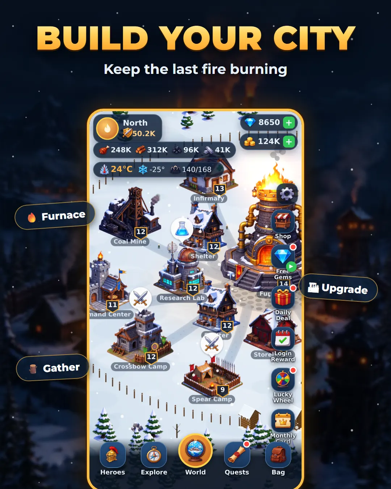
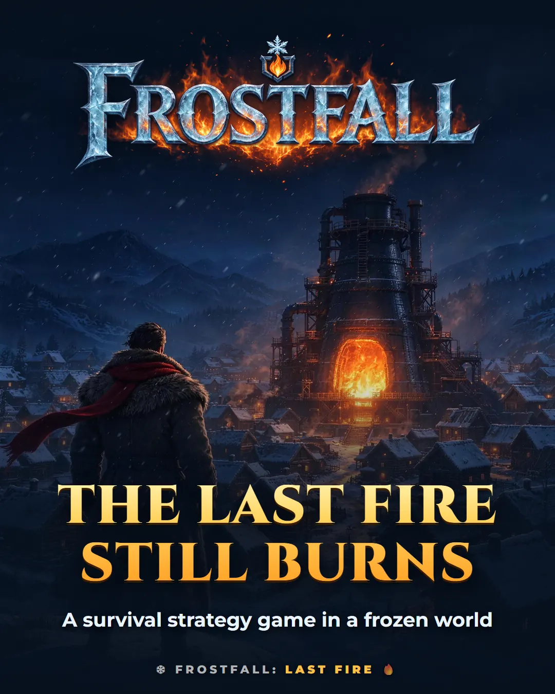
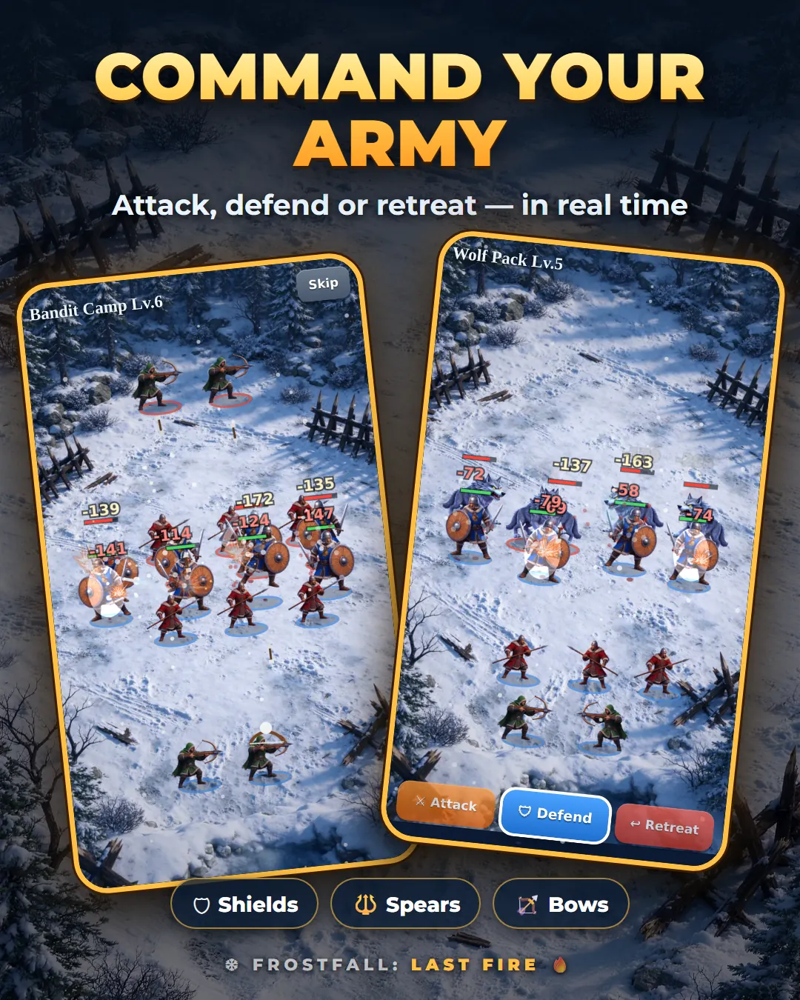
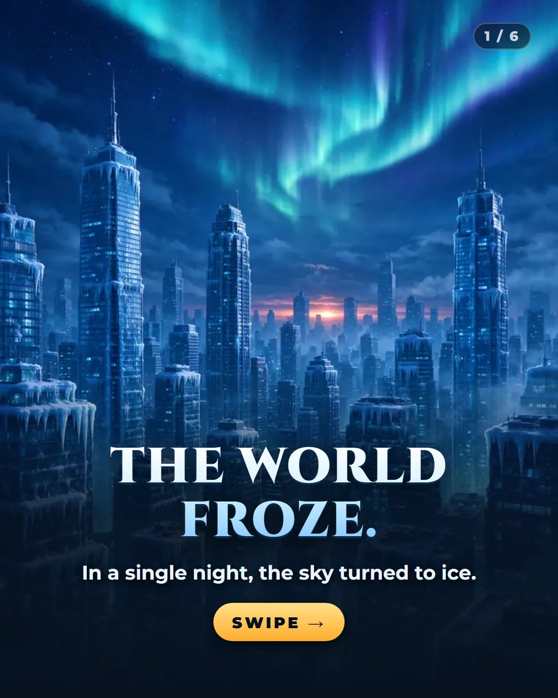
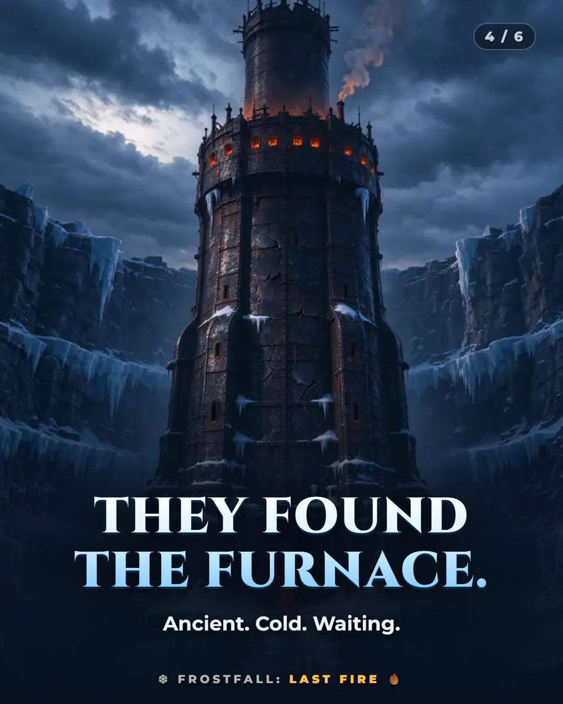
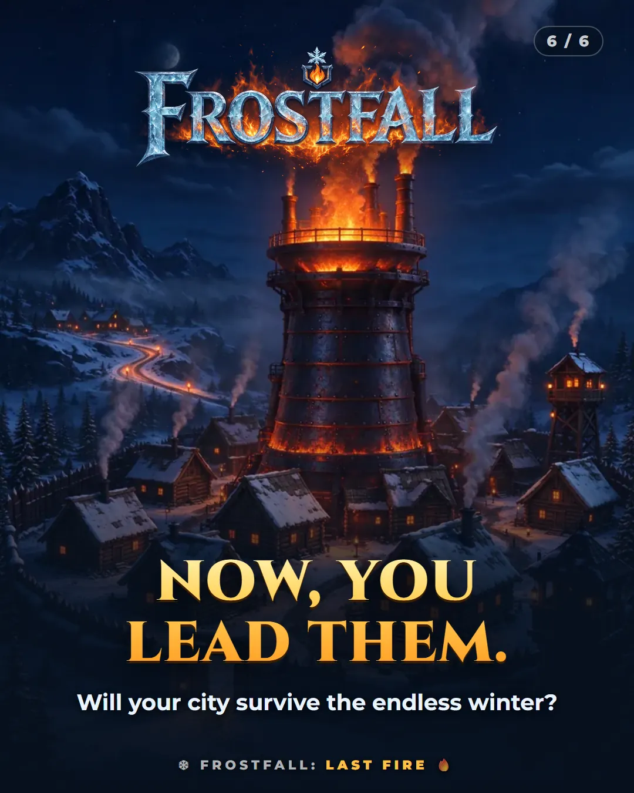

Build your city
Gather, construct and upgrade. Every decision helps your settlement survive.

The world froze overnight. Survivors found an ancient furnace. Now it’s your turn to lead them through the endless winter.
Build a city around the flame, gather resources, recruit heroes and stand together against the cold.

Gather, construct and upgrade. Every decision helps your settlement survive.

Attack, defend or retreat. Prepare your troops before the storm arrives.
From the first frozen night to the moment hope returns. Discover the world that awaits you.
Explore the story →
In a single night, the sky turned to ice.

Ancient. Cold. Waiting.

Will your city survive the endless winter?
Join the survivors. Build, battle, ally and survive in a frozen world.
Play free on Google Play ↗